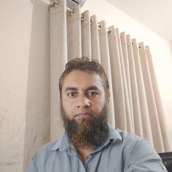

Educator & Researcher | Mindul Muslim | AI-Powered Cybersecurity Analyst
Md. Abdur Rahman is an educator, founder principal, and lifelong learner dedicated to developing individuals through academic excellence, technology, and ethical values. A Sociology graduate from the University of Dhaka, he began his career in IELTS, GRE, and O/A Level instruction and later founded and led educational institutions as Founder Principal. He has experience as a researcher at the University of Dhaka and holds a PGD from the same university in IT. He has also completed the Google Cybersecurity Professional Certificate, along with multiple certifications in mindfulness from Rice University and the University of Cambridge. He is currently advancing his expertise in cybersecurity and artificial intelligence. Alongside his professional journey, he actively engages in mindfulness practices and Islamic Dawah, focusing on holistic human development. “I develop people—academically, technologically, and ethically.”
IELTS, GRE, O Level, A Level training and leadership.
Cybersecurity, IT, databases, and AI learning.
Mindfulness, Islamic Dawah, and character building.
SQL-based system for academic record management.
Dual boot Linux configuration and system practice.
Ongoing study of system security and networking.
IELTS, GRE, O/A Level preparation.
Basic IT, cybersecurity awareness, and skills development.
Mindfulness and value-based personal growth.
Email: your@email.com